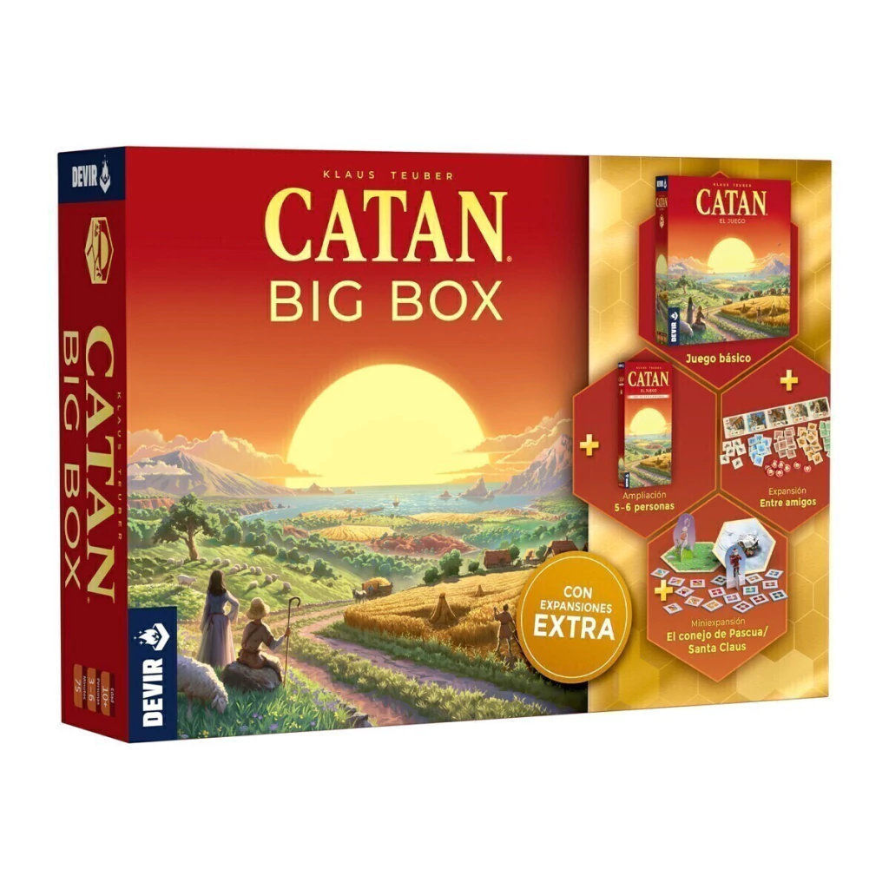

Catan
Un clásico de los juegos de estrategia y negociación en el que los jugadores deben conseguir recursos para construir carreteras, poblados y ciudades.
La interacción entre jugadores y la administración de recursos hacen que cada partida sea diferente.
Consultar manual